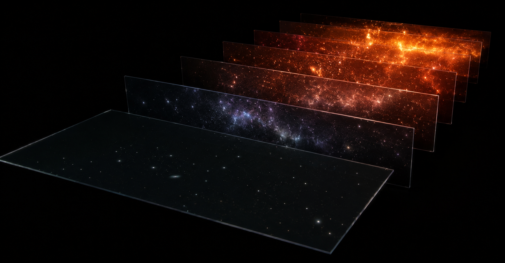

I read a post about quasars.
It was a good post — the Euclid space telescope found 31 of the oldest ever documented, two of them dating to the universe’s first 670 million years. Their light took roughly 13 billion years to get here. I’ve seen a hundred posts like it. This one wouldn’t leave me alone, and it took a day to figure out why.
Start with what a quasar is: a supermassive black hole in the act of eating. Gas and dust spiral in, friction and gravity heat the infall to millions of degrees, and the result outshines the entire host galaxy. It is the brightest sustained phenomenon in the universe, and it is temporary. A quasar is a phase, not a thing — tens of millions of years of gluttony, and then the fuel runs out.
Which means the quasars in that image almost certainly don’t exist anymore. Not “have changed.” Don’t exist. Quasar activity peaked around ten billion years ago, when the universe was denser and gas was everywhere, and it has been declining ever since. The engines survive — every dead quasar leaves behind a dormant supermassive black hole, and the quiet monster at the center of our own galaxy was plausibly a quasar once. But the light show is over. What Euclid photographed is a species of event that has largely gone extinct, visible only because the announcement of its existence is still in transit.
So far this is standard cosmic-perspective material. Light is slow, the universe is big, everything we see is old news. Even the Sun is eight minutes stale. Most people have absorbed this and filed it as trivia.
Here is the part that isn’t trivia.
When you look at a photograph of a friend from ten years ago, you understand it as a stale record of a person who has a current state. The photo is old; your friend is not. There is a fact of the matter about what they look like right now, and the photo simply fails to capture it. Our entire intuition about images works this way: the picture is the past, the subject is the present, and the gap between them is a deficiency of the picture.
That intuition does not survive contact with a quasar 13 billion light-years away.
Ask the obvious question: fine, the image is old — what does that quasar look like now? And relativity answers: the question is not hard, it is malformed. “Now” across 13 billion light-years is not a fact waiting to be measured. Simultaneity at that separation is a bookkeeping convention — different observers, moving differently, will slice spacetime into “now” differently, and physics declares all their slicings equally valid. There is no cosmic present tense in which that object is currently doing anything. The snapshot is not a degraded view of a current state. As far as physics is concerned, the snapshot is all there is to see.

This flips the way we usually describe deep-field astronomy. We say telescopes look at faraway objects that happen to be old, as if distance were the point and age the side effect. It’s closer to the truth the other way around. The night sky is a stack of transparencies: every shell of distance is a different age of the universe, all superimposed on the same piece of sky. Nearby, mature spiral galaxies going about their quiet business. Farther, the crowded violence of cosmic noon. Farther still, the first quasars igniting in a universe five percent of its current age. And beyond them, nothing bright at all — a genuine gap, the dark ages, until you hit the cosmic microwave background, which is the universe itself at 380,000 years old, before there was anything to see by.
The whole biography is on display at once, sorted by radius. You cannot look far without looking early. The universe does not permit it.
People sometimes call telescopes time machines, which is true but undersells it. A time machine implies you could also visit the present — that the past is one destination among several. It isn’t. For everything beyond our immediate neighborhood, the past is the only destination. The deep universe has no “meanwhile.” It has only “then,” delivered at the speed of light, and a rigorous proof that asking for anything more recent is asking a question the universe doesn’t recognize.
I keep coming back to the two record-holders in that Euclid batch. Somewhere, 13 billion years ago, a black hole ate so violently that the flash is still crossing space, and we happened to build an instrument sensitive enough to catch it. The thing itself is long gone — burned out, gone quiet, its host galaxy merged and reshaped beyond recognition into something we will never identify. What arrived at the telescope is not a message from a distant place. It is the only remaining fact about an event, and now we have it.
That’s what the post was really announcing, though it didn’t say so. Not the discovery of 31 objects. The receipt of 31 obituaries — each one also, unavoidably, a birth announcement, because the deaths they report happened in a universe still young enough that they read like news.